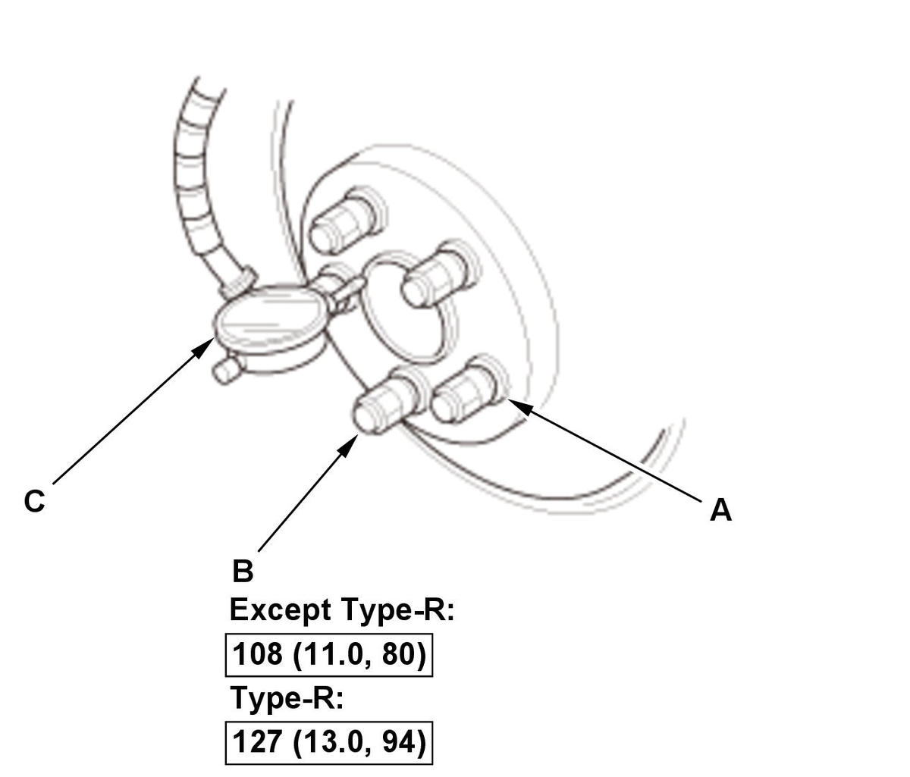

Wheel Bearing End Play Inspection: Inspection
NOTE: How to read the torque specifications .
- Vehicle - Lift
- Front Wheels and Rear Wheels - Remove
- Wheel Bearing End Play - Inspect

Courtesy of HONDA, U.S.A., INC.1. Install suitable flat washers (A). 2. Install the wheel nuts (B).
3. Tighten the nuts to the specified torque to hold the brake disc securely against the hub.
4. Attach the dial gauge (C).
5. Place the dial gauge against the hub flange.
6. Measure the bearing end play while moving the brake disc inward and outward.
7. If the bearing end play measurement is more than the standard, replace the wheel bearing or the hub bearing unit .
Wheel bearing end play: Front/Rear: 0-0.05 mm (0-0.0020 in) - Front Wheels and Rear Wheels - Install